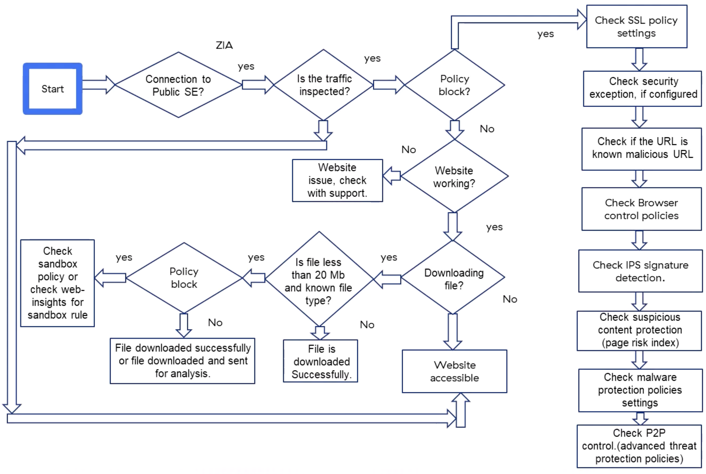
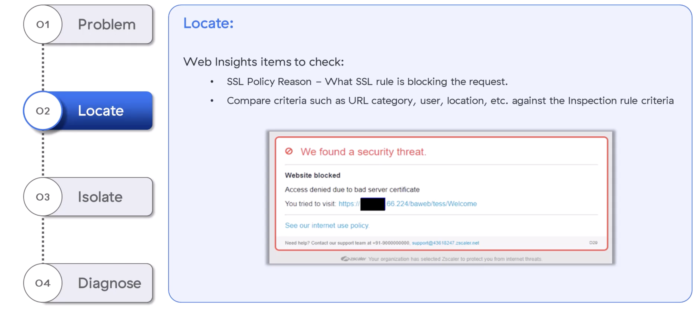
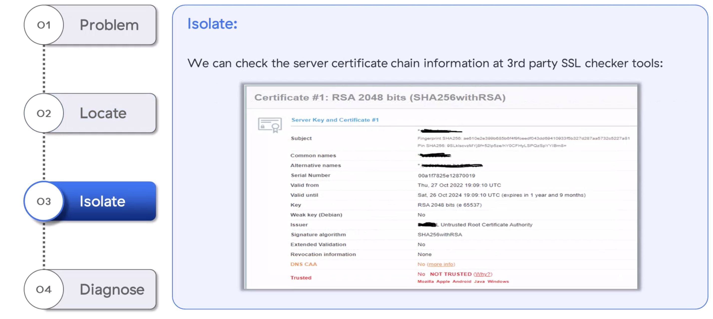
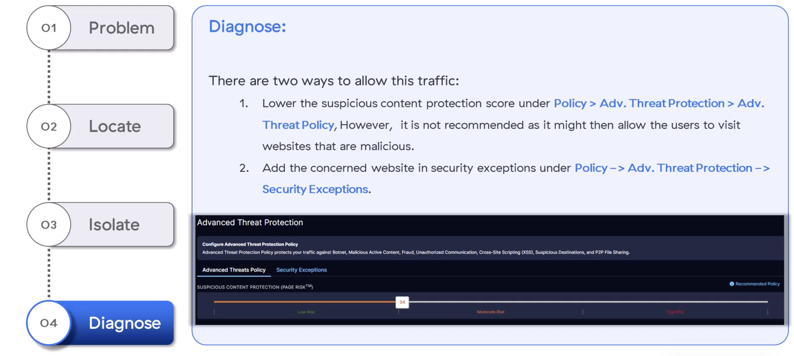

Bad certificates, sandbox quirks, and the Page Risk index — security blocks that aren't quite blocks
"Most security blocks are working as designed — the trick is reading the Web Insights record well enough to know whether to trust it or fix it."
💭THINK FIRST · WHY EVERY SECURITY BLOCK STARTS THE SAME WAY
Security Services — SSL policy, security exceptions, IPS, malware, ATP, sandbox, P2P — sit in a long evaluation chain. Most "this should be allowed" tickets are not a misfire — they're a true positive triggered by one piece of the chain. Treating the symptom requires identifying which link.
If a file under 20MB is sandboxed but a 50MB file is not, what does that imply about how sandboxing is configured?
Why does "the site is blocked but it's legitimate" almost always point you to Web Insights first?
Q1 — MODEL ANSWER
Sandbox has an upload-size limit (20MB by default) and an allowed file-type list. Anything larger or outside the type list is dropped off the sandbox path and sent on. That's why the same "infected-file test" passes through one route and not the other — the gating happens before the sandbox even sees the content.
Q2 — MODEL ANSWER
Web Insights records exactly which security feature blocked the transaction — Policy Action, URL Category, URL Class, Block Policy Type, Suspicious Content score. That single row collapses "which of seven security services blocked me?" into a deterministic answer, which then maps directly to where to navigate in the Admin UI.
SECTION 0
The Security Services Troubleshooting Flow
Security services protect against four pillars of cyberthreat: Minimize the Attack Surface, Prevent Compromise, Eliminate Lateral Movement, Prevent Data Loss. ZIA's security chain — SSL policy, security exception, malicious-URL list, browser control, IPS, suspicious content (Page Risk), malware protection, P2P / ATP — evaluates each transaction sequentially. Every block lands in Web Insights with the policy and reason attached.

Security Services decision tree: SSL inspection → security exception → known malicious URL → browser control → IPS → suspicious content (Page Risk) → malware → P2P / advanced threat protection. Each box maps to a column in Web Insights.
💡FILE SIZE & FILE TYPE GATING
Sandbox has a 20MB upload limit and a configured file-type list. A file over 20MB or of an unsupported type is downloaded successfully and sent for analysis only if it matches the sandbox policy — otherwise it's not sandboxed at all.
🧠
MENTAL NOTE
Four cyberthreat protection areas: Minimize Attack Surface · Prevent Compromise · Eliminate Lateral Movement · Prevent Data Loss. Security-services chain order (memorise): SSL → Security Exception → Browser Control → IPS → Page Risk → Malware → ATP/P2P. Sandbox gating: 20MB cap + file-type allowlist.
ASK A QUESTION
ADD A NOTE
💭THINK FIRST · ACCESS DENIED DUE TO BAD SERVER CERTIFICATE
User says "I should be able to reach this site." Zscaler says "the certificate is untrusted." Both can be right — the question is whether the user is willing to accept the risk, or whether the webmaster needs to fix the cert.
Why is a third-party SSL checker a better diagnostic than the user's browser screenshot?
"Set SSL Inspection to Not Inspect" and "set Untrusted Server Certificate action to Allow" both unblock the user. What's the difference in risk?
Q1 — MODEL ANSWER
Third-party SSL checkers (Digicert, SSL Labs) walk the certificate chain on the server side and show exactly which link is broken: untrusted root CA, missing intermediate, expired cert, name mismatch. The user's browser only shows the final verdict. A checker tells you whether to fix the cert (webmaster issue) or accept the risk (Zscaler policy change).
Q2 — MODEL ANSWER
"Not Inspect" stops Zscaler from looking at the traffic at all — DLP, ATP, CAC all go dark for that destination. "Allow Untrusted Server Certificate" still inspects the traffic but stops short of blocking on cert validity. The second is much less damaging — you keep all downstream security except certificate-chain verification.
USE CASE 1 · ZIA
"Access Denied Due to Bad Server Certificate"
Symptom: User is accessing a website that should be allowed per their consideration, but they see a Zscaler block page: "Access denied due to bad server certificate."

User-facing block page: "We found a security threat. Website blocked. Access denied due to bad server certificate." Includes a link to the Zscaler internet use policy.
1
PROBLEM
User cannot reach the URL; Zscaler returns the "bad server certificate" block page.
2
LOCATE
Web Insights items to check:
SSL Policy Reason — what SSL rule is involved.
Compare criteria (URL category, user, location) against the SSL Inspection rule.
3
ISOLATE
Check the server certificate chain at a 3rd-party SSL checker (e.g. Digicert SSL Check, SSL Labs). Look for:
Untrusted Root Certificate Authority.
Chain issues / missing intermediate / "Contains anchor in trust store"/"Not in trust store".
Trusted: No on Mozilla / Apple / Android / Java / Windows.
4
DIAGNOSE
If the user must access the site, two options (in increasing security cost):
Set the action for Untrusted Server Certificate to Allow — keeps inspection, drops cert-validation block.
Set the relevant SSL Inspection rule to Not Inspect — drops all downstream inspection too.
Otherwise, contact the webmaster to fix the bad certificate.

Third-party SSL checker output: Server Key & Certificate #1 shows "Untrusted Root Certificate Authority" and "Trusted: NOT TRUSTED" on Mozilla/Apple/Android/Java/Windows — confirming the cert chain, not Zscaler, is at fault.
⚠PREFER "ALLOW UNTRUSTED" OVER "NOT INSPECT"
"Not Inspect" disables all downstream security (DLP, CAC, ATP) for the destination. "Allow Untrusted Server Certificate" keeps inspection alive but tolerates the bad cert. Always pick the narrower change.
🧠
MENTAL NOTE
"Bad server certificate" block → confirm fault with a 3rd-party SSL checker (Digicert/SSL Labs). Fix options: (1) Untrusted Server Certificate action = Allow (preferred), (2) SSL Inspection rule = Not Inspect (drops all security), (3) contact webmaster to renew/fix cert.
ASK A QUESTION
ADD A NOTE
💭THINK FIRST · ADVANCED THREAT PROTECTION & PAGE RISK
"PageRisk block inbound response: page is unsafe" tells you something useful — Zscaler scored the page content as too risky. The danger isn't the block; it's the temptation to lower the score threshold to make the ticket go away.
Why is lowering the Suspicious Content Page Risk threshold a strictly worse fix than adding a security exception for the specific URL?
If the same page is blocked one day and allowed the next, what changed?
Q1 — MODEL ANSWER
Lowering the threshold globally allows every risky page that scores just above the old line — most of which you didn't intend to allow. A security exception is surgical: it permits exactly the URL you care about and leaves the threshold protecting the rest of the internet. Always prefer the narrow, listed exception.
Q2 — MODEL ANSWER
The page content itself probably changed — Page Risk is computed from inbound content (scripts, redirects, embeds) and updates per-request. A page that was clean yesterday may have been compromised, or simply had a risky third-party widget added. Re-scan and treat each event as an independent score, not a stable verdict.
USE CASE 2 · ZIA
Advanced Threat Protection — "Page is Unsafe"
Symptom: The user is trying to access a legitimate website but is getting a blocked page. Web Insights policy action: "PageRisk block inbound response: page is unsafe."
1
PROBLEM
User reaches a legitimate-looking site; Zscaler returns a Page Risk block.
2
LOCATE
Open Web Insights, filter by the URL in question, find the matching transaction.
3
ISOLATE
From Web Insights, capture:
Policy Action
URL Category
URL Class
Block Policy Type
Suspicious Content score
If those columns aren't visible, add them via the three-dot menu.
4
DIAGNOSE
The policy action "PageRisk block inbound response: page is unsafe" indicates the page content score exceeded the Page Risk index threshold set by the Advanced Threat Suspicious Content Protection policy. Two options:
Lower the score threshold in Policy → Adv. Threat Protection → Adv. Threat Policy — not recommended, this allows other risky sites too.
Add the URL to Security Exceptions in Policy → Adv. Threat Protection → Security Exceptions — the surgical fix.

Advanced Threat Protection policy editor. Tabs: Advanced Threats Policy (with the Suspicious Content Page Risk slider — Low Risk · Moderate Risk · High Risk) and Security Exceptions (URL allowlist). Prefer the Exceptions tab for surgical fixes.
⚠DO NOT LOWER THE THRESHOLD
Lowering the Suspicious Content threshold may allow users to visit websites that are actually malicious. Always prefer adding a Security Exception for the specific URL.
🧠
MENTAL NOTE
"PageRisk block inbound response: page is unsafe" → Page Risk index score exceeded the Adv Threat Suspicious Content threshold. Resolve via Policy → Adv Threat Protection → Security Exceptions (add URL). Never lower the score threshold — that opens the door to every other risky site at the same score.